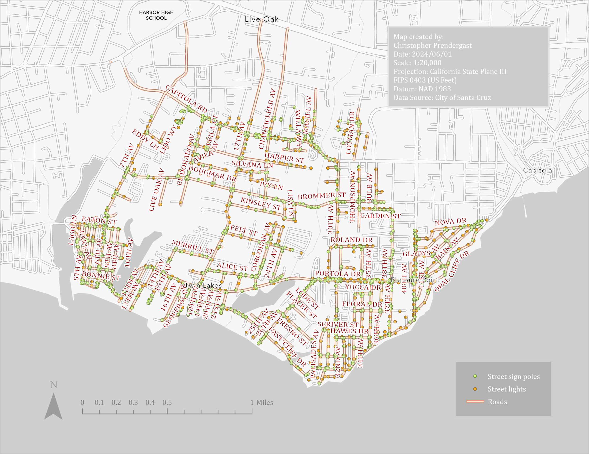

The City of Santa Cruz Public Works Department requested to have road names transferred to the assets in the existing Street Signs, Street Sign Poles, and Street Lights layers in a file geodatabase. This is accomplished with a Python script.
Street Signs, Street Sign Poles, and Street Lights
Map showing Street Signs, Street Sign Poles, and Street Lights layers.
{kind=link}
Python Code
# ----------------------------------------------------------------------------------------------------------------------
# santa_cruz_public_works.py
# Christopher Prendergast
# 2024/05/12
# ----------------------------------------------------------------------------------------------------------------------
#
import arcpy
from pathlib import Path
global g_in_gdb
global g_out_gdb
def full_path(root_dir: str, basename: str) -> str:
"""
Convert basename to a full path given the root directory or geo-database path.
:param str root_dir: The root directory or file geo-database path.
:param str basename: The basename of a geo-database or feature class.
:return str: The root and basename joined as a path.
"""
return str(Path(root_dir, basename))
def setup_env(proj_dir_str: str, in_gdb_str: str, out_gdb_str: str) -> None:
"""
Set up the geo-database environment. Assign values to global
variables g_in_gdb and g_out_gdb.
:param str proj_dir_str: The project directory.
:param str in_gdb_str: The basename of the input geo-database within the project directory.
:param str out_gdb_str: The basename of the output geo-database within the project directory.
:return NoneType: None
"""
#
# Allow overwriting outputs.
# Note: overwriting doesn't work if the layer is open in ArcGIS Pro due
# to lock. Closing ArgGIS Pro releases the lock and the outputs can be
# overwritten. See:
# https://community.esri.com/t5/python-questions/arcpy-env-overwriteoutput-true-fails/m-p/411113#M32410
#
arcpy.env.overwriteOutput = True
#
# Check the project directory exists.
#
proj_dir = Path(proj_dir_str)
assert proj_dir.is_dir(), \
f"Can't find the project directory {proj_dir}"
print("...project directory:", proj_dir)
#
# Assign global variables for the input and output geo-databases.
#
global g_in_gdb
g_in_gdb = full_path(proj_dir_str, in_gdb_str)
global g_out_gdb
g_out_gdb = full_path(proj_dir_str, out_gdb_str)
#
# Check the input and output geo-databases exist.
#
assert arcpy.Exists(g_in_gdb), \
f"Can't find input geo-database: {g_in_gdb}"
assert arcpy.Exists(g_out_gdb), \
f"Can't find output geo-database: {g_out_gdb}"
print("...input geo-database:", g_in_gdb)
print("...output geo_database:", g_out_gdb)
def buffer(in_fc: str, buffer_dist: str, out_fc: str) -> str:
"""
Run the Pairwise Buffer geo-processing tool.
:param str in_fc: The input feature class to buffer.
:param str buffer_dist: The buffer distance in the string format expected by the tool e.g. "100 feet".
:param str out_fc: The feature class to output containing the buffered features.
:return str: The output feature class.
"""
print("...buffer, input feature class:", in_fc)
print("...buffer, output feature class:", out_fc)
print("...buffer, distance:", buffer_dist)
assert arcpy.Exists(in_fc), \
f"Can't find input feature class: {in_fc}"
assert arcpy.Exists(g_out_gdb), \
f"Can't find output geo-database: {g_out_gdb}"
#
# Create the buffer feature class.
#
arcpy.analysis.PairwiseBuffer(
in_features=in_fc,
out_feature_class=out_fc,
buffer_distance_or_field=buffer_dist
)
return out_fc
def join(target_fc: str, join_fc: str, out_fc: str) -> str:
"""
Run the Spatial Join geo-processing tool.
:param str target_fc: The target feature class.
:param str join_fc: The join feature class.
:param str out_fc: The feature class to output containing the joined features.
:return str: The output feature class.
"""
print("...join, target feature class:", target_fc)
print("...join, join feature class:", join_fc)
print("...join, output feature class:", out_fc)
assert arcpy.Exists(target_fc), \
f"Can't find target feature class: {target_fc}"
assert arcpy.Exists(join_fc), \
f"Can't find join feature class: {join_fc}"
assert arcpy.Exists(g_out_gdb), \
f"Can't find output geo-database: {g_out_gdb}"
#
# Configure the field mapping.
#
mapping = map_fields(target_fc, join_fc)
#
# Spatially join the target feature class to the join feature class.
# Counterintuitively, a 1:1 join aggregates rows when there are
# multiple spatial matches!
#
arcpy.analysis.SpatialJoin(
target_features=target_fc,
join_features=join_fc,
out_feature_class=out_fc,
field_mapping=mapping
)
return out_fc
def map_fields(target_fc: str, join_fc: str) -> arcpy.FieldMappings:
"""
Create a field mappings object which can be passed as parameter
passed to the Spatial Join geo-processing tool. Since a single
feature can be within 100 feet of more than one road, mappings
with both "First" and "Join" merge rules are created. This will
add two new fields in the output, namely, "first_road_name" and
"concat_road_names" respectively.
:param target_fc: The target feature class.
:param join_fc: The join feature class.
:return arcpy.FieldMappings: The field mappings object.
"""
print("...map fields, target feature class:", target_fc)
print("...map fields, join feature class:", join_fc)
assert arcpy.Exists(target_fc), \
f"Can't find target feature class: {target_fc}"
assert arcpy.Exists(join_fc), \
f"Can't find join feature class: {join_fc}"
def add_output_field(fm: arcpy.FieldMap, name: str) -> None:
"""
Helper function to configure an output field.
:param arcpy.FieldMap fm: The field map to add the output field to.
:param str name: The name to give to the new output field.
:return NoneType: None
"""
fld = fm.outputField
fld.type = "TEXT"
fld.name = name
fld.aliasName = name
fm.outputField = fld
#
# Create a field mappings object and add the fields from the
# target feature class.
#
fms = arcpy.FieldMappings()
fms.addTable(target_fc)
#
# Remove the RHG_NAME field from the target field mapping because
# we are adding the road name from the join feature class below.
#
fms.removeFieldMap(fms.findFieldMapIndex("RHG_NAME"))
#
# Add "first_road_name" field which will contain the first matching
# road name.
#
# Create a new field map object and add the RHG_NAME field from the
# join feature class.
#
first_fm = arcpy.FieldMap()
first_fm.addInputField(join_fc, "RHG_NAME")
#
# Specify the merge rule -- take the first matching value when
# there are multiple matches.
#
first_fm.mergeRule = "First"
#
# Configure the output field.
#
add_output_field(first_fm, "first_road_name")
#
# Add this field mapping to the field mappings.
#
fms.addFieldMap(first_fm)
#
# Add "concat_road_names" field which will contain all the matching
# road name concatenated and separated with a comma.
#
# Create a new field map object and add the RHG_NAME field from the
# join feature class.
#
concat_fm = arcpy.FieldMap()
concat_fm.addInputField(join_fc, "RHG_NAME")
#
# Specify the merge rule -- Concatenate matching value when there
# are multiple matches.
#
concat_fm.mergeRule = "Join"
concat_fm.joinDelimiter = ","
#
# Configure the output field.
#
add_output_field(concat_fm, "concat_road_names")
#
# Add this field mapping to the field mappings.
#
fms.addFieldMap(concat_fm)
return fms
def copy_field(from_fc: str, from_key_name: str, from_field_name: str,
to_fc: str, to_key_name: str, to_field_name: str) -> None:
"""
Copy the value of a field from one feature class to another where the specified keys match.
:param str from_fc: The source feature class to copy from.
:param str from_key_name: The name of the key field in the source feature class.
:param str from_field_name: The name of the field containing the value to copy in the source feature class.
:param str to_fc: The target feature class to copy to.
:param str to_key_name: The name of the key field in the target feature class.
:param str to_field_name: The name of the field that will contain the new value in the target feature class.
:return NoneType: None
"""
print("...copy field, from feature class:", from_fc)
print("...copy field, to feature class:", to_fc)
assert arcpy.Exists(from_fc), \
f"Can't find from feature class: {from_fc}"
assert arcpy.Exists(to_fc), \
f"Can't find to feature class: {to_fc}"
#
# Check the fields exist.
#
for field in [from_key_name, from_field_name]:
assert arcpy.ListFields(from_fc, field), \
f"The field {field} does not exist in {from_fc}"
for field in [to_key_name, to_field_name]:
assert arcpy.ListFields(to_fc, field), \
f"The field {field} does not exist in {to_fc}"
#
# Create a dictionary to hold keys and field values from the
# source feature class.
#
from_values_dict = {}
#
# Iterate through the rows in the source feature class and add
# field values to the dictionary.
#
with arcpy.da.SearchCursor(from_fc, [from_key_name, from_field_name]) as search_cur:
for k, v in search_cur:
from_values_dict[k] = v
#
# Iterate through the target feature class and update the field
# values where they keys match.
#
with arcpy.da.UpdateCursor(to_fc, [to_key_name, to_field_name]) as upd_cur:
for to_row in upd_cur:
this_key = to_row[0]
#
# Update the field using the value from the dictionary.
#
if this_key in from_values_dict.keys():
to_row[1] = from_values_dict[this_key]
upd_cur.updateRow(to_row)
def run_tools() -> None:
"""
Run the geo-processing tools to buffer and join the various feature
classes.
:return NoneType: None
"""
#
# Specify the input feature classes.
#
roads = full_path(g_in_gdb, "PublicWorks_Roads")
signs = full_path(g_in_gdb, "StreetSigns")
poles = full_path(g_in_gdb, "StreetSignPoles")
lights = full_path(g_in_gdb, "StreetLights")
#
# Specify the output feature classes.
#
roads_buff = full_path(g_out_gdb, "roads_buffer_100ft")
signs_join = full_path(g_out_gdb, "signs_join")
poles_join = full_path(g_out_gdb, "poles_join")
lights_join = full_path(g_out_gdb, "lights_join")
#
# Run the geo-processing tools.
#
buffer(roads, "100 feet", roads_buff)
join(signs, roads_buff, signs_join)
join(poles, roads_buff, poles_join)
join(lights, roads_buff, lights_join)
#
# Update the original feature classes with the road names.
# Note: There can be multiple roads within 100 ft of a feature.
# Choose either:
# first_road_name to get the first matching name, or
# concat_road_names to concatenate all matching names.
#
# from_field = "first_road_name"
from_field = "concat_road_names"
#
# Note: must use the field names not their aliases for the key fields!
#
copy_field(signs_join, "SVG_NUM",
from_field, signs, "SVG_NUM", "RHG_NAME")
copy_field(poles_join, "PLG_NUM",
from_field, poles, "PLG_NUM", "RHG_NAME")
copy_field(lights_join, "POLE_NUM",
from_field, lights, "POLE_NUM", "RHG_NAME")
if __name__ == '__main__':
#
# Define locations of geodatabases.
#
my_proj_dir = r"C:\ArcGIS_local_projects\SantaCruzPublicWorks"
my_in_gdb = "PublicWorks_RoadNames.gdb"
my_out_gdb = "PythonOutput.gdb"
setup_env(my_proj_dir, my_in_gdb, my_out_gdb)
#
# Run the main process.
#
run_tools()
# ----------------------------------------------------------------------------------------------------------------------
# Sample Output
# ----------------------------------------------------------------------------------------------------------------------
# "C:\Program Files\ArcGIS\Pro\bin\Python\envs\arcgispro-py3\python.exe" C:\ArcGIS_local_projects\SantaCruzPublicWorks\santa_cruz_public_works.py
# ...project directory: C:\ArcGIS_local_projects\SantaCruzPublicWorks
# ...input geo-database: C:\ArcGIS_local_projects\SantaCruzPublicWorks\PublicWorks_RoadNames.gdb
# ...output geo_database: C:\ArcGIS_local_projects\SantaCruzPublicWorks\PythonOutput.gdb
# ...buffer, input feature class: C:\ArcGIS_local_projects\SantaCruzPublicWorks\PublicWorks_RoadNames.gdb\PublicWorks_Roads
# ...buffer, output feature class: C:\ArcGIS_local_projects\SantaCruzPublicWorks\PythonOutput.gdb\roads_buffer_100ft
# ...buffer, distance: 100 feet
# ...join, target feature class: C:\ArcGIS_local_projects\SantaCruzPublicWorks\PublicWorks_RoadNames.gdb\StreetSigns
# ...join, join feature class: C:\ArcGIS_local_projects\SantaCruzPublicWorks\PythonOutput.gdb\roads_buffer_100ft
# ...join, output feature class: C:\ArcGIS_local_projects\SantaCruzPublicWorks\PythonOutput.gdb\signs_join
# ...map fields, target feature class: C:\ArcGIS_local_projects\SantaCruzPublicWorks\PublicWorks_RoadNames.gdb\StreetSigns
# ...map fields, join feature class: C:\ArcGIS_local_projects\SantaCruzPublicWorks\PythonOutput.gdb\roads_buffer_100ft
# ...join, target feature class: C:\ArcGIS_local_projects\SantaCruzPublicWorks\PublicWorks_RoadNames.gdb\StreetSignPoles
# ...join, join feature class: C:\ArcGIS_local_projects\SantaCruzPublicWorks\PythonOutput.gdb\roads_buffer_100ft
# ...join, output feature class: C:\ArcGIS_local_projects\SantaCruzPublicWorks\PythonOutput.gdb\poles_join
# ...map fields, target feature class: C:\ArcGIS_local_projects\SantaCruzPublicWorks\PublicWorks_RoadNames.gdb\StreetSignPoles
# ...map fields, join feature class: C:\ArcGIS_local_projects\SantaCruzPublicWorks\PythonOutput.gdb\roads_buffer_100ft
# ...join, target feature class: C:\ArcGIS_local_projects\SantaCruzPublicWorks\PublicWorks_RoadNames.gdb\StreetLights
# ...join, join feature class: C:\ArcGIS_local_projects\SantaCruzPublicWorks\PythonOutput.gdb\roads_buffer_100ft
# ...join, output feature class: C:\ArcGIS_local_projects\SantaCruzPublicWorks\PythonOutput.gdb\lights_join
# ...map fields, target feature class: C:\ArcGIS_local_projects\SantaCruzPublicWorks\PublicWorks_RoadNames.gdb\StreetLights
# ...map fields, join feature class: C:\ArcGIS_local_projects\SantaCruzPublicWorks\PythonOutput.gdb\roads_buffer_100ft
# ...copy field, from feature class: C:\ArcGIS_local_projects\SantaCruzPublicWorks\PythonOutput.gdb\signs_join
# ...copy field, to feature class: C:\ArcGIS_local_projects\SantaCruzPublicWorks\PublicWorks_RoadNames.gdb\StreetSigns
# ...copy field, from feature class: C:\ArcGIS_local_projects\SantaCruzPublicWorks\PythonOutput.gdb\poles_join
# ...copy field, to feature class: C:\ArcGIS_local_projects\SantaCruzPublicWorks\PublicWorks_RoadNames.gdb\StreetSignPoles
# ...copy field, from feature class: C:\ArcGIS_local_projects\SantaCruzPublicWorks\PythonOutput.gdb\lights_join
# ...copy field, to feature class: C:\ArcGIS_local_projects\SantaCruzPublicWorks\PublicWorks_RoadNames.gdb\StreetLights
#
# Process finished with exit code 0
# ----------------------------------------------------------------------------------------------------------------------